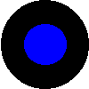
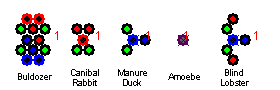

Bug-a-zoo is a simulation of artifical life. In a virtual flat rectangular world creatures are crawling around looking for food. When a creature is well fed, it reproduces and pass their genes to clones of themselves. When a creature does not manage to feed itself of gets eaten it will die. Successful creatures reproduce well in order to take over the World. Less successful creatures do not reproduce well and become extinct. However, on reproduction mutation may take place. The clone may be more successful or inferior compared to its parent. In the end the most fittest creatures will survive!
The playground for creatures is the World. It is a flat rectangular space where manure grows and creatures can crawl around and interact with each other. The user can choose from a number of Worlds. Each World has its own rules, influencing the behaviour of the Creatures. For example, in one World creatures reproduce faster or can move easier around than in another World.
Following worlds are available:
A Creature is a collection of Cells cooperating together. Each cell has its own functionality. Following cells are possible:
| Dragger: a Dragger Cell is able to propulse the creature. A Dragger Cell receives signals from Sensor Cells. It sums all signals (Vector summation) and exerts a force on the Creature. The strength and direction of the force depends on the summed Sensor signals. The conversion from sensor signals. | |
| Manure Sensor: a Manure Sensor Cell senses Manure. It passes its signal to the Dragger Cells. If a Dragger Cell is more closely to the Manure Sensor, it receives a stronger signal. A Manure Sensor also senses Prey Consuming Cells (Predator sense) from other Creatures and signals Dragger Cells to move away from them. | |
|  | Manure Consumer: a Manure Consumer Cell eats Manure and supplies the Creature with energy. Consumption starts when the Manure Consumer Cell gets close to Manure. Consumption speed depends on the distance to the center of the Manure. |
| Prey Sensor: a Prey Sensor Cell senses other Creature's Cells. The signal it receives becomes stronger when the energy of the other Creature's Cell is larger. The Prey Sensor passes its signal to the Dragger Cells. If a Dragger Cell is more closely to the Prey Sensor, it receives a stronger signal. | |
| Prey Consumer: a Prey Consumer Cell eats other Creatures and supplies the Creature with energy in this way. Consumption starts as soon as the Prey Consumer Cell gets close to other Creatures Cells. | |
| Hybrid Cell: a Hybrid Cell has a bit of the functionality from all Cells metioned above. It is a multi-purpose Cell. In the initial Hybrid Cells all functionality is present in the same amount. Other Hybrid Cells are generated by mutation. In these Hybrids all functionality may be not equally present in the Cell. |
| The colors of the Cell indicate its functionality. The border of the Cell indicates sensor functionality. The interior indicates consumer or dragger functionality. In Hybrid Cells colors are mixed according to its functionality. |  |
In order to be successful a Creature has to reproduce and pass it genes to a clone of itself. In order to reproduce the creature has to eat food.
Manure is pure energy. A manure eating creature eats it and gets stronger. Manure grows and originates spontaneously when time passes. Since the World has a closed energy system, all energy dissipated by creatures returns as Manure in the World. No energy is lost.
After start-up of the software the splash screen shows. From here you can get Help (this page) or enter the software (Start).
Here it all happens. Start the simulation in slow, normal or fast rate (Slow, Normal, Fast) or edit the World or Populations first (Edit)
Enables you to insert new Creatures, whether entire predefined Populations, a prefab Creature or your own designed one.